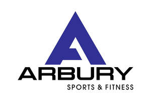

Trade Mark Journal No.2025/011 14 March 2025
UK00004157611 8 February 2025 (25)

- Class 25
- Clothing, footwear, headgear, including clothing for men, women, children and babies, clothing for sports including football, gymnastics, cycling, Boxing, motor cross, motor bike, running, swimming, triathlon, rowing, mix martial arts, hockey, cricket, golf and skiing, clothing for motorists, underwear including compression underwear, compression base layers, outerwear, overcoats, leisure clothing, jackets, jumpers, pullovers, sports jerseys, vests, shirts, t-shirts, pants, trousers, shorts, pajamas, dressing gowns, motor bike gloves, motor cross gloves, cycling gloves, bath robes; swimwear including bathing trunks and bathing suits, thermal clothing, waterproof clothing; wrist bands, shoes and boots including football shoes and boots, gymnastic shoes, other sports shoes and boots; socks, stockings, tights, bandannas and headbands, padded clothing, including padded clothing for men, women, children and babies, padded clothing for sport, motor bike jackets, motor bike trousers, motor cross jackets, motor cross trousers, cycling shorts, cycling jersey, Compression base layers, After ski boots, Cycling shoes, Clothing for cycling, Cycling pants, Cycling shorts.
Mrs Raziya Bhatti